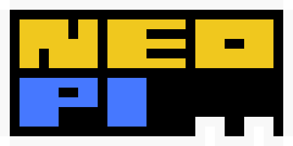
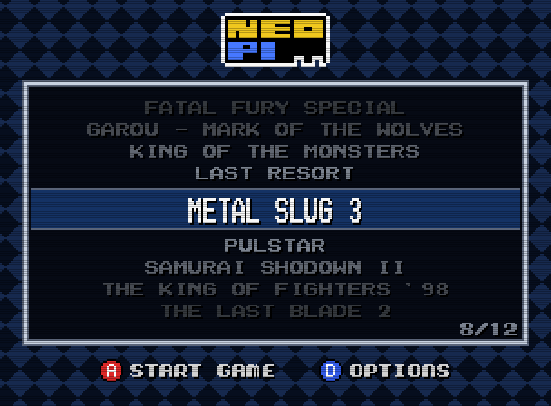
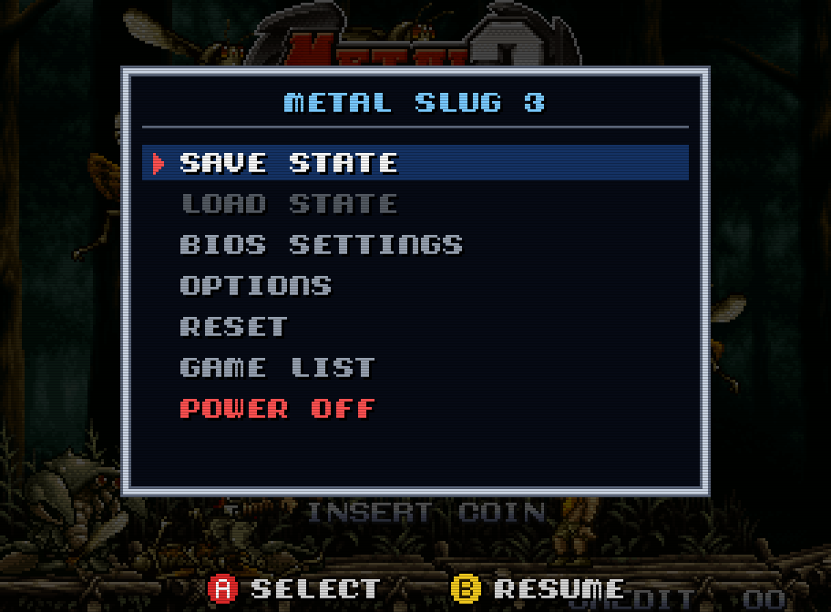
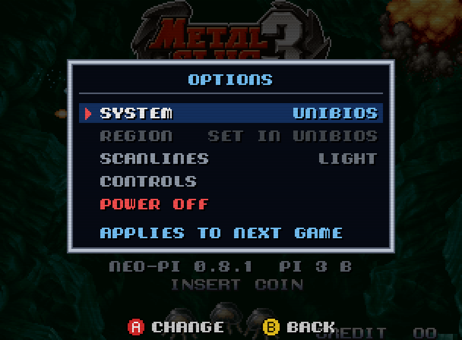

With no unnecessary layers and highly responsive input.



For RPi 3 & 4 · Free · GPLv3
Enjoying it? Buy me a crema caffèPowered by Geolith, a highly accurate Neo Geo emulator. Play in MVS arcade mode or AES home-console mode, in all BIOS regions.
Gamepads are polled every millisecond. Beam racing keeps video output in sync with the HDMI signal for near-instant response.
Crisp, square pixels at 1080p or 720p, with optional scanlines, lag-free.
A lightweight bare-metal system that gets you into the game in just a few seconds.
Save states, BIOS settings, screenshots, lazy finger (turbo buttons). All driven from the gamepad.
Got just one game on your SD card? neo-pi boots straight into it!
neogeo.zip BIOS file and your .neo game files into the neopi folder.BIOS files and games are not included.
The first time you connect a pad, neo-pi asks you to press the buttons you want as A, B, C, D, Start and Select. Button hints are shown on screen in the menus. Then, in game:
The second pad you connect is Player 2.
neo-pi is free. Learn more about the project. If you enjoy it, you can buy me a crema caffè :)
Buy me a coffeeYou might also like nes-pi, a bare-metal NES emulator.